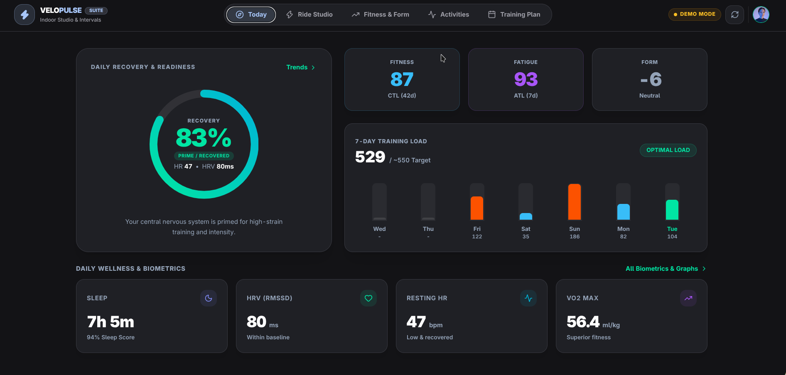
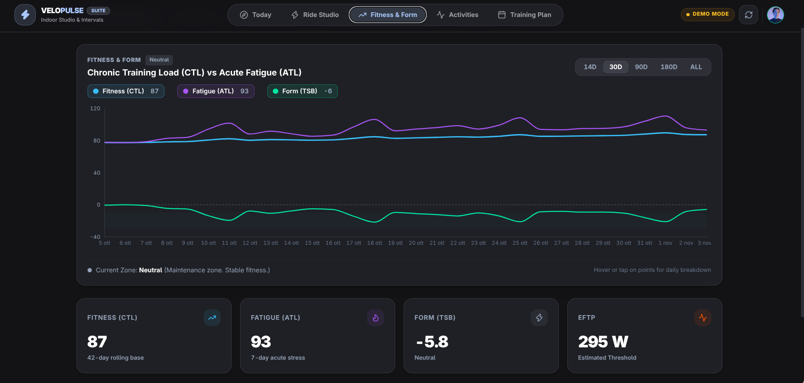
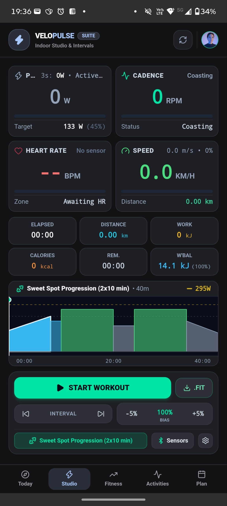

Sensori Bluetooth
VeloPulse legge in tempo reale il rullo smart (FTMS), il sensore di potenza, la cadenza e la fascia cardiaca.
Studio di allenamento indoor + analisi delle prestazioni
VeloPulse unisce lo studio di allenamento al chiuso per la bicicletta all'analisi delle prestazioni di Intervals.icu. Collega i sensori Bluetooth del tuo rullo, segui un allenamento e guarda come cambia la tua forma nel tempo.

Allenamento al chiuso
Collega i sensori Bluetooth del tuo rullo: il resto dell'allenamento lo segue VeloPulse.
VeloPulse legge in tempo reale il rullo smart (FTMS), il sensore di potenza, la cadenza e la fascia cardiaca.
Durante un allenamento a intervalli, VeloPulse imposta da solo al rullo la potenza richiesta in ogni fase.
Carica un file di allenamento Zwift (.zwo) o scegli uno degli allenamenti già pronti nell'app.
Senza un rullo collegato, il simulatore ti permette di provare un allenamento comunque.
Un motore fisico calcola velocità e distanza dalla potenza pedalata, come in un allenamento su strada.
Ogni sessione genera un file .fit, pronto da caricare su Strava, Garmin Connect o Intervals.icu.
Mentre pedali, VeloPulse mostra in diretta quanta riserva anaerobica (W') ti resta, per gestire gli sforzi sopra soglia.
La pagina dell'attività
Ogni attività ha una pagina con la mappa del percorso GPS e i grafici nel tempo di altitudine, battito, potenza e cadenza. A fianco trovi il tempo passato in ogni zona e il disaccoppiamento aerobico, cioè quanto sale il battito a potenza costante.
La potenza più alta che riesci a tenere a lungo prima di dover rallentare.
Quanta energia puoi spendere sopra la potenza critica prima di esaurirti.
VeloPulse stima CP e W' dalla curva di potenza calcolata da Intervals.icu sulle tue attività.
Analisi della forma
VeloPulse calcola la tua forma e la tua fatica e ti mostra come recuperi fra un allenamento e l'altro.
CTL (fitness), ATL (fatica) e TSB (forma) ti dicono quanto carico hai accumulato e quanto sei pronto a spingere.
Un anello di recupero basato sulla variabilità del battito (HRV), sul battito a riposo e sul sonno.
VeloPulse segue nel tempo le fasi del sonno, la variabilità del battito (HRV), il VO2max stimato e il battito a riposo, con i dati arrivati da Intervals.icu.
I dati dell'atleta arrivano dal tuo account Intervals.icu tramite la chiave API, oppure dalla modalità dimostrativa.


Dove gira
VeloPulse funziona su web e come app installata.




Sul telefono una barra delle schede in basso porta a Today, Studio, Fitness, Activities e Plan.
In tre passi
Usa VeloPulse dal browser oppure installa l'app per il tuo sistema.
Collega il rullo e i sensori Bluetooth, oppure usa il simulatore per provare un allenamento senza hardware.
Inserisci la chiave API del tuo account Intervals.icu per vedere i tuoi dati, oppure usa la modalità dimostrativa con dati di esempio.
Domande frequenti
No. Puoi provare un allenamento con il simulatore, senza un rullo collegato.
Per vedere i tuoi dati reali sì: inserisci la tua chiave API di Intervals.icu nelle impostazioni. Senza chiave puoi provare l'app con la modalità dimostrativa e dati di esempio.
La potenza critica è la potenza più alta che riesci a tenere a lungo; il W' è la riserva di energia che puoi spendere sopra quella soglia prima di esaurirti. VeloPulse li stima dalla curva di potenza di Intervals.icu e mostra quanto ti resta della riserva (W'bal) in diretta mentre pedali.
La chiave API e le impostazioni restano nel browser o nel dispositivo che usi. I dettagli sono nell'informativa sulla privacy.
Ogni sessione genera un file .fit che puoi caricare su Strava, Garmin Connect o Intervals.icu.
Su web (Chrome, Edge o un browser basato su Chromium, per i sensori Bluetooth), Android, Windows, macOS e Linux. Per iPhone serve compilare l'app con Xcode.